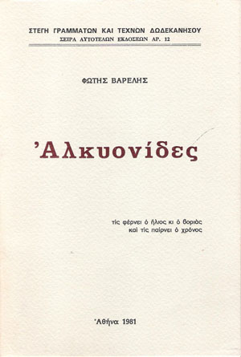

Απόψε ανακάλυπτε ξαφνικά μια βαθιά έκρηξη μέσα του,
θαρρείς ένα ζωντανό θάνατο. Του φάνηκε πως μέσα στα πλήθη
των ψυχών που συναντιούνται και πάνε συρφετός προς το τέρμα
της ύπαρξης, εκατομμύρια είναι αυτοί που χάνουν τα ταίρια τους
τα ιδανικά. Χρόνια μακρυά ο ένας απ' τον άλλο, ο ένας μπρος
και ο άλλος πίσω οι άνθρωποι, ανταμώνονται σε ένα μεσοδιάστημα
και πάνε μαζί χωρίς να μπορούν να πάρουν ελεύθερα το δικαίωμα
απ' την ίδια τους την συνείδηση, να απλώσουν απλόκαρδα το χέρι
και να τραβήξουν κοντά τους για σύντροφο της ζωής τους
την αγαπημένη ψυχή που βαδίζει δίπλα τους σήμερα.
Και ήταν αυτή που πρέπει να γεννήθηκε γι' αυτούς!
Όσο για κείνη την ημέρα που οπωσδήποτε κάποιος απ' τους δυο
πρώτος θα αφήσει στη ζωή τον άλλο μόνο, αυτό, επειδή
η κάθε ευχή είναι δύσκολη, πάνε σε μια ταβέρνα και τσουγκρίζοντας
ένα ποτήρι το ξεχνάνε...